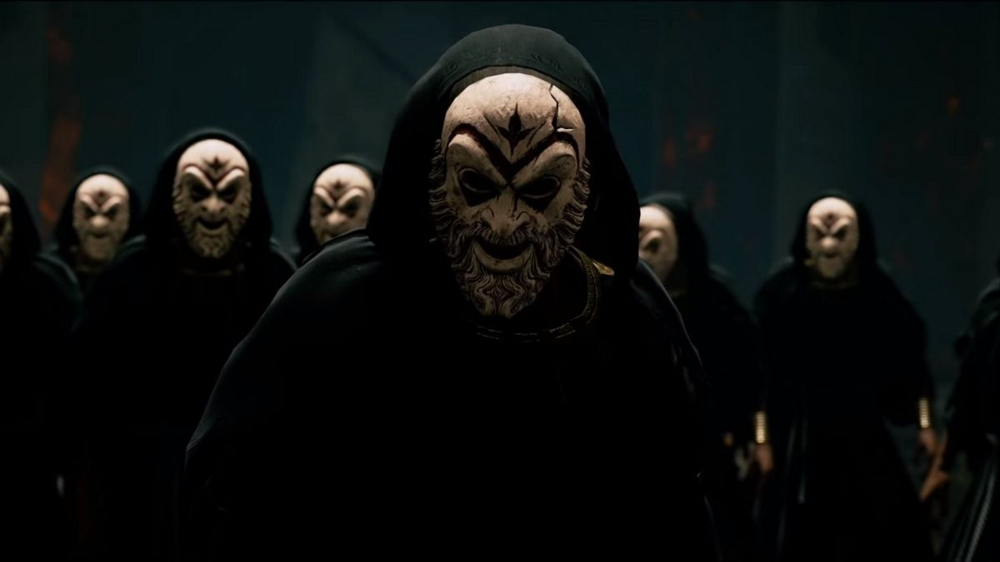
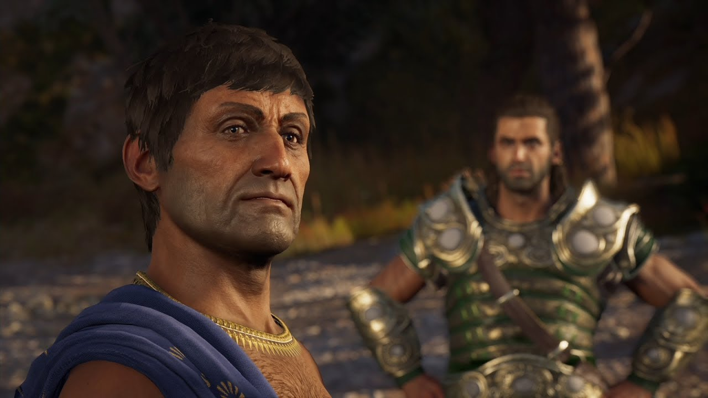
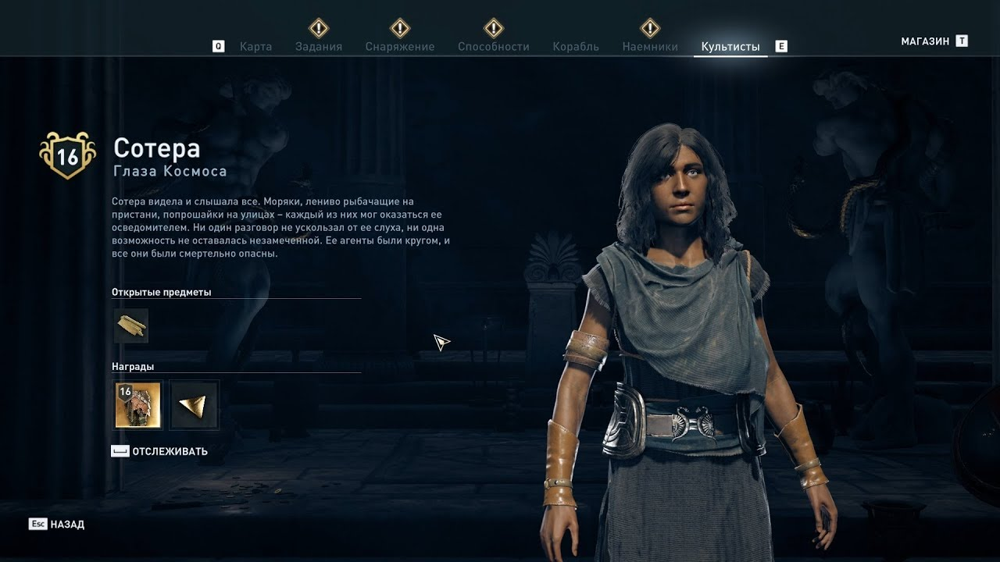
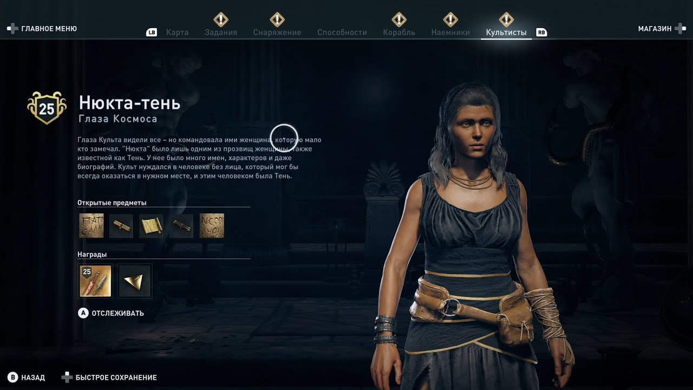
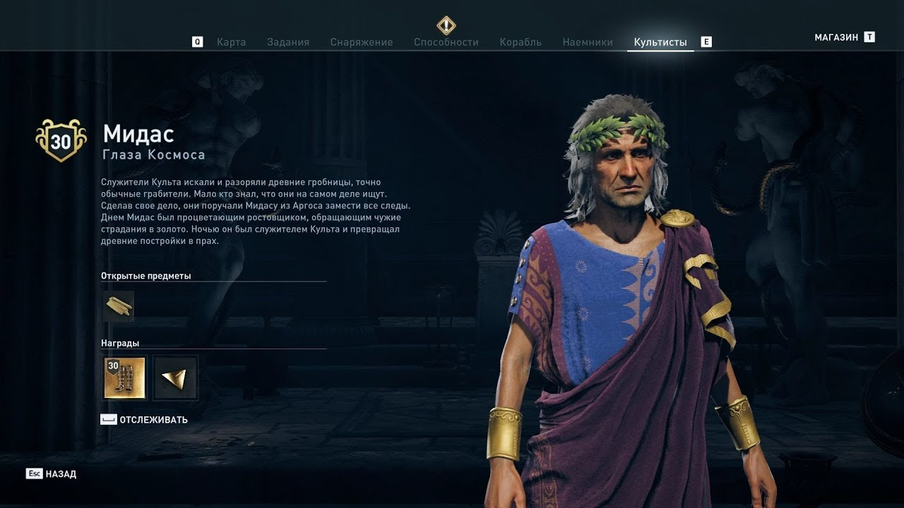
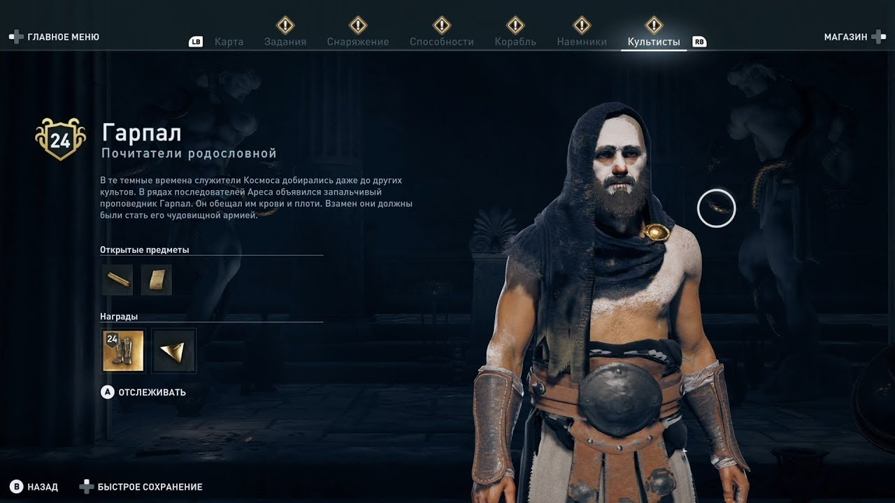

<div class="cult-bg-pg">
  <div class="container">
    <div class="row">
      <section class="cult col-12">
        <div class="pg-border">
          <div class="box">
            <h1 class="title">Антагоністи</h1>

            <div class="box-cult">
              <hr class="cult-line" />
              <h3 class="cult-name">Культ Космоса</h3>
              
              <p class="text">
                В ході історії Одіссеї Assassin's Creed Алексіос і Кассандра
                дізнаються про служителів культу Космосу, моторошної групі
                могутніх людей, притесняющих влада в Грецькому світі. Все
                замасковані культісти - це люди, які мають важливе значення, які
                поставили перед собою мету створити нескінченну війну, щоб
                підтримувати своє панування з тіні.
              </p>

              <p class="text">
                Ви розблоковуєте меню культу в 3 епізоді історії (всього 9). На
                той час ви вже двічі вб'єте культистів по ходу історії.
                Рекомендуємо спочатку завершити всю історію, а потім перейти до
                решти культісти. Тому що, ви не зможете розправитися з деякими з
                них до закінчення сюжету. У вас просто не вистачить рівня для
                цього, а також є культ Деймоса, який ви не можете перемогти до
                кінця історії. Деякі культісти прив'язані до побічних квестів,
                про які я розповім нижче.
              </p>

              <p class="text">
                Зазвичай, щоб отримати підказку де знайти наступного культісти,
                вам потрібно прикінчити одного з них. Ви можете переглянути
                підказки по кожному в меню «культісти». Вони можуть говорити про
                те, що потрібно «допомагати людям в регіоні», а це значить
                виконувати побічні квести в цій області. Інші скажуть витягнути
                культистів допомогою битви за завоювання певних регіонів або
                знайти їх підказки в печерах, корабельні аварії і інших місцях.
              </p>

              <p class="text">
                Шукати підказки, насправді не обов'язково, все, що вони роблять,
                це відзначають місце розташування в грі, але для чого тоді цей
                гайд! Ви можете піти прямо в місце культісти, якщо знаєте, де
                вони. Тому не соромтеся пропустити все підказки і просто йдіть
                за вказаними нижче точкам на карті, якщо не вказано інше. Єдиний
                виняток - культісти, прив'язані до побічних квестів, спочатку
                потрібно пройти ці квести. Культісти у внутрішньому колі можуть
                бути розкриті лише після вбивства всіх інших в гілці. Після
                вбивства 41 культісти буде розкритий лідер -
                <b>Привид Космосу.</b>
              </p>
            </div>

            <div class="box-cult">
              <hr class="cult-line" />
              <h3 class="cult-name">КУЛЬТІСТИ «ОЧІ КОСМОСУ »</h3>
              <h3 class="cult-name">ЕЛПЕНОР</h3>
              
              <p class="text">
                Перший культісти в Очах Космосу, а також найперший культісти, з
                яким зустрічаєтеся в своїй історії. Тому немає ніяких підказок,
                для розгадки його особистості, ви зустрінетеся з ним в головній
                історії.
              </p>

              <p class="text">
                Елпенор зустрінеться в квесті «Змія в траві» , знайдіть його в
                печері на західній стороні Храму Змії в Фокіді, розташованої в
                Долині Змії.
              </p>
            </div>

            <div class="box-cult">
              <hr class="cult-line" />
              <h3 class="cult-name">СОТЕРА</h3>
              
              <p class="text">
                Щоб знайти Сотеру, вирушайте в Порт Нісайя на південно-східну
                сторону Мегаріса на краю води. Ви знайдете її біля великого
                човна справа.
              </p>
            </div>

            <div class="box-cult">
              <hr class="cult-line" />
              <h3 class="cult-name">НЮКТА-ТІНЬ</h3>
              
              <p class="text">
                Мудрець культізма Очі Космосу, може бути розкрита тільки, коли
                переможені всі інші культісти з цієї групи. Вона розташована в
                Агорі біля театру Діоніса в великих Афінах Аттики, поряд з
                дошкою оголошень.
              </p>

              <p class="text">
                У неї може не бути охоронців, і вона не зробить перший крок, але
                досить сильна і швидка - може використовувати димові бомби, щоб
                зникати і атакувати зі спини.
              </p>
            </div>

            <div class="box-cult">
              <hr class="cult-line" />
              <h3 class="cult-name">МІДАС</h3>
              
              <p class="text">
                П'ятий культісти в Очах Космосу. Ви можете знайти його після
                завершення квесту «Зміїне лігво» на вулицях Аргоса в районі
                Арголіди або біля Храму Посейдена.
              </p>
            </div>

            <div class="box-cult">
              <hr class="cult-line" />
              <h3 class="cult-name">ІОКАСТА ЯСНОВИДЮЩА</h3>
              
              <p class="text">
                Щоб викрити особу мудреця, ви повинні перемогти всіх культистів
                в цій групі.
              </p>

              <p class="text">
                Иокасту можна знайти на руїнах Анаватоса (острів Хіос).
              </p>
            </div>

            <div class="box-cult">
              <hr class="cult-line" />
              <h3 class="cult-name">ГАРПАЛ</h3>
              
              <p class="text">Розкрити Гарпала можна отримавши 2 підказки:</p>

              <p class="text">
                Перша це - Записки послідовників , які випадають з убитих
                послідовників Ареса. Їх можна знайти в спалених храмі Гери на
                півдні Аттики.
              </p>

              <p class="text">
                Друга - Лист Гарпалу , випадає після вбивства Хрісіс.
              </p>

              <p class="text">
                Після викриття ви знайдете Гарпала зі своїми послідовниками на
                острові Кеос в Печері Ареса. Вона розташована поруч з водним
                басейном, куди ви можете пірнути від лежачого лева і пробратися
                до гирла печери.
              </p>
            </div>
          </div>
        </div>
      </section>
    </div>
  </div>
</div>
